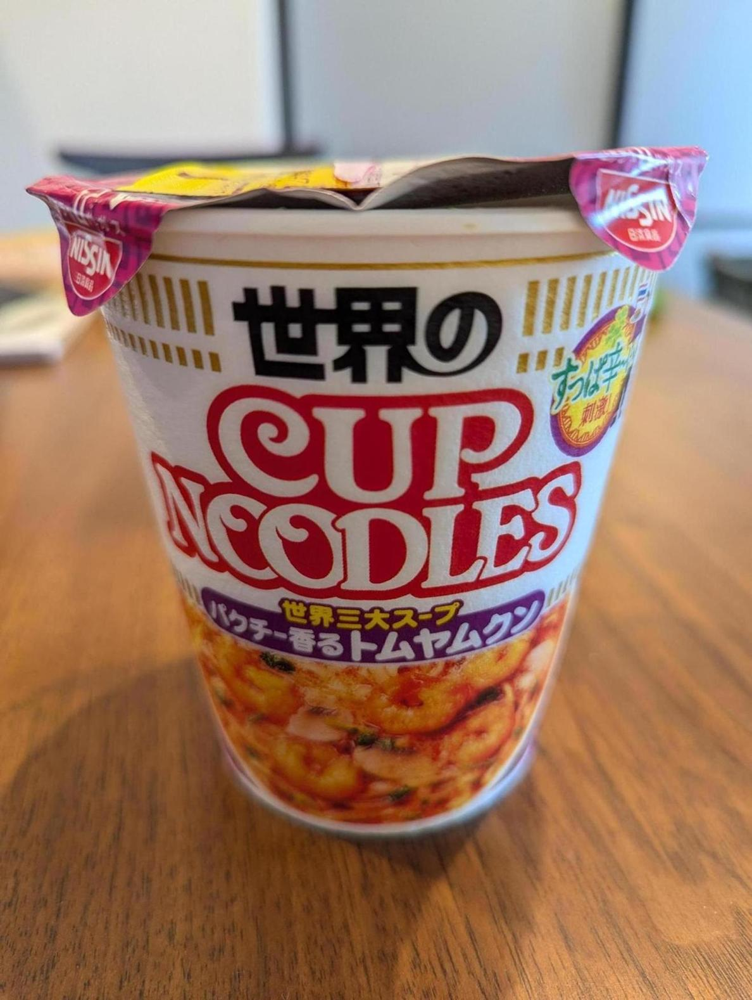

<- 日記

またトムヤムクン食べた。
毎朝運動のために縄跳びをしているんだが、最近ボトルネックが脚から手に移動してきている。しばらく跳んでると縄を持つ手が疲労して続けられない。 困るのは、疲労する手が右手だけということだ。これはおそらく左右の手にかかっている力のバランスが悪いのだろう。
縄跳びは、短時間でかなりいい運動になる上、道具も縄のみで、地面さえあればどこでもできる。ジムに行く必要もない。ジムに通っては辞めてしまったことがこれまで2回ほどあるが、縄跳びだけは続けることに成功している。